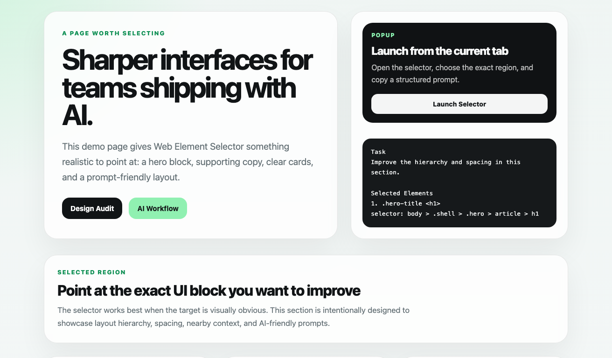
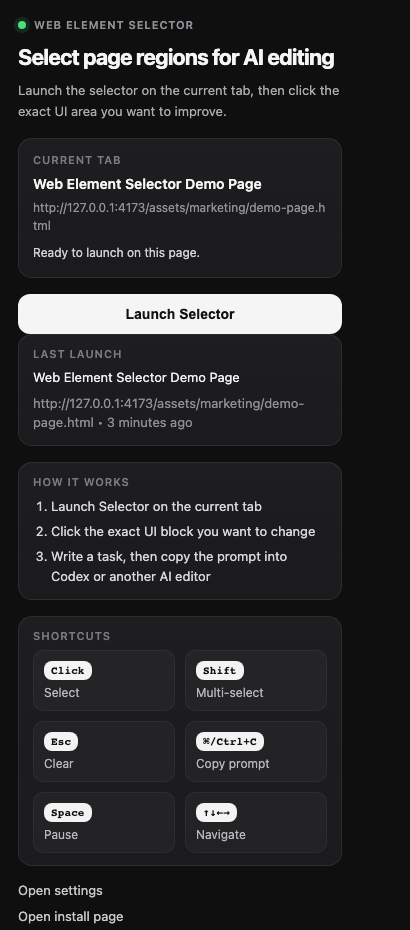
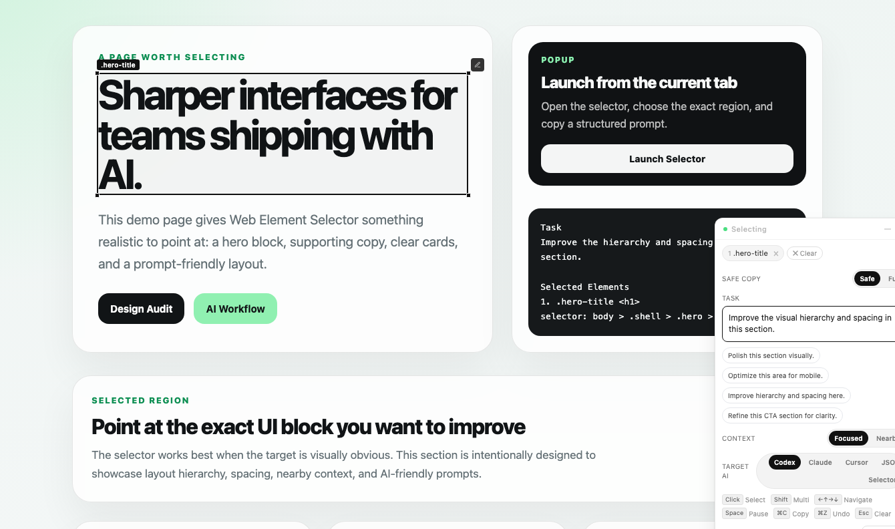
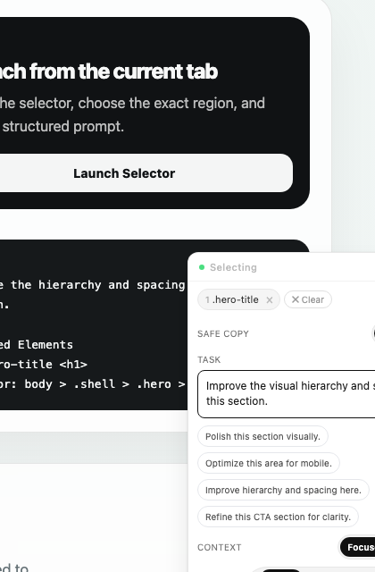
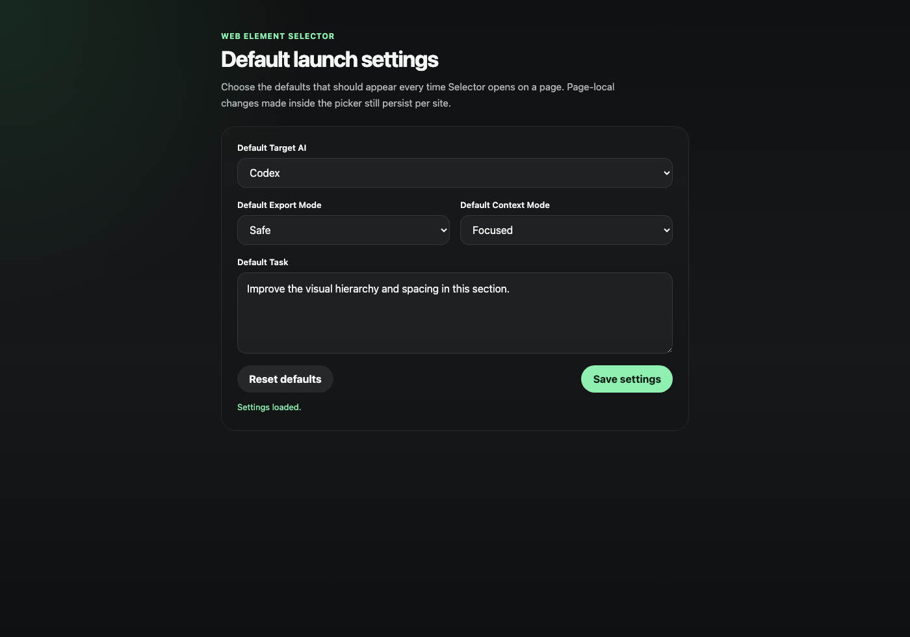

Exact targeting
Point at the right region
Click one element or many, navigate with the keyboard, and keep the requested change scoped to the exact UI block.
Launch on any page, point at the exact UI block you want to change, and export a structured prompt for Codex, Claude Code, Cursor, JSON workflows, or selector-only handoff.

Keep UI feedback precise instead of describing “that card near the top”.
Web Element Selector closes the gap between what you see in the browser and what your coding assistant needs to change in source. It scopes feedback to the exact element, preserves nearby structure, and turns visual direction into a prompt your editor can act on.
Click one element or many, navigate with the keyboard, and keep the requested change scoped to the exact UI block.
Export prompts for Codex, Claude Code, Cursor, JSON, or selector-only workflows with task text and implementation context.
Text, HTML, and `data-*` stay out of copied output unless you intentionally switch to Full mode.
The flow is intentionally short: launch Selector, choose the area, describe the change, and paste the result into your AI coding tool.
Open the popup and launch Selector on the current tab.
Click the exact part of the page you want to improve, refine, or rebuild.
Write a task, choose your output mode, and copy a prompt formatted for your coding workflow.
These are the actual current UI surfaces shipped in the project: popup launcher, page overlay, prompt copy panel, and settings.




The extension path is the most stable way to use Web Element Selector. The bookmarklet is still available if you prefer it.
chrome://extensions or edge://extensionsDeveloper modeLoad unpackedweb-element-selector folderLaunch SelectorSelector supports output targeting, export detail level, nearby context, per-element notes, and saved defaults from the settings page.
Switch the output shape to match the tool you plan to paste into.
Choose whether the export should stay tight on the selected node or include more layout context.
Set default target AI, export mode, context mode, and task text once from the options page.